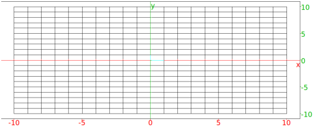

13.2.6 Drawing grid paper: grid_paper
The grid_paper command draws grid paper.
-
grid_paper takes three mandatory arguments and two optional arguments.
-
xspacing, the spacing in the x direction.
- θ, the angle from the horizontal to draw the grid.
- yspacing, the spacing in the y direction.
- Optionally, x=xmin..xmax, to determine how
far the grid extends in the x direction (by default, the
distances given in the graphic configuration page accessible from
the main menu).
- Optionally, y=ymin..ymax, to determine how
far the grid extends in the y direction (by default, the
distances given in the graphic configuration page accessible from
the main menu).
- grid_paper(xspacing,θ,yspacing ⟨x=xmin..xmax,y=ymin..ymax⟩)
draws the grid paper.
Example
Input:
grid_paper(1,pi/2,1)
Output:

Unchecking Show Axes on the cfg screen removes
the axes.